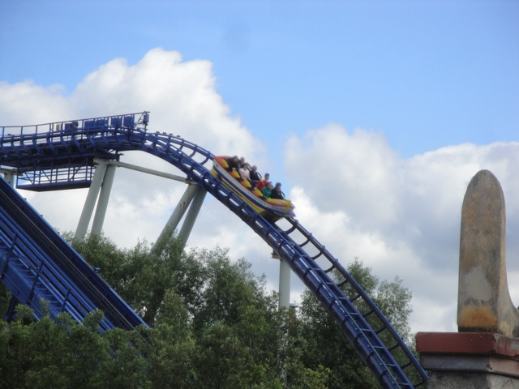

| |
Posideon Review

Today at Europa Park, we'll be reviewing Posideon, the park's water coaster. And keep in mind that Atlantica Supersplash is not a water coaster. It is a water ride. It does not count as a credit. This is the only water coaster that counts as a credit at Europa Park. And though you may worry about capacity here, it's Europa Park. They crank the boats out here. So that horrendous looking line that appears to be 3 hours is more like 30 minutes. Still long, but it moves and isn't as scary as you would imagine. Anyways, we get in the boats, pull down the lap bar, and we're off. Oh, and your butt will get wet due to the fact that this is in fact, a water coaster. We leave the beautifully themed station and float along, seeing the just absolutely BEAUTIFUL theming. No seriously, this Greek theming is on par with Disney. It's one of the reasons I just absolutely LOVE Europa Park. And I LOVE them with a PASSION!!! There's just so much to see, fountains, shipwrecks, and arcitecture. It's all so beautiful. And right now, it's just a boat ride. I must say. I am impressed. I am really f*cking impressed. After that boat ride that already made me happy, we climb out of the water and head up the lifthill. It gives us a good view of Silver Star. We crest the top and go down a dip. It's fun and all, but then we head down the first drop. A curved drop to the ground and through the grass. It's not crazy, but it's fun. We then head up another curved hill and head into a midcourse brake. Hey, I don't mind too much. See, I told you that this was a credit. We then head down another curved drop that leads us through a small tunnel at the bottom. We then head up a small curved hill before dipping down into the water and SPLASH!!! Water water everywhere. We're gonna get wet. At this point, it becomes a pleasent boat ride again, exploring all the beautiful theming that Europa Park has to offer, including a recreation of the Parthenon. We float along, enjoying more views of Posideon, Euro Sat, Silver Star, and this great theming before we eventually head out of the water and up the 2nd lifthill. We reach the top of that, look at Silver Star, turn around and then head down the big straight drop. It's a fun drop into a rock tunnel underground. WEE!!! We pop out of that into a small little hill that leads us back into the water. SPLOOSH!!! We then float along and continue to look at the marvelous greek theming until we head back into the beautifully themed station. As a water coaster, it's pretty standard. Most water coasters have this formula. Coaster portion, SPLOOSH!!! Shoot the Chutes portion, SPLOOSH!!! And that's exactly what Posideon does. What makes this ride truley stand out from being just another soggy credit is the Greek theming, because it really is good. So if you're not a credit whore, you can still ride for the sake of appreciating the beautiful theming. Just be warned that you will get wet on this ride.
6/10
Location: Europa Park
Opened: 2000
Built by: Mack
Last Ridden: June 25, 2012
Posideon Photos

Home
|